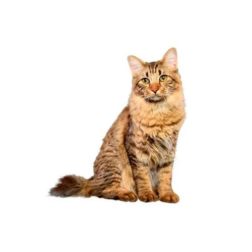

Abyssinians are highly intelligent and intensely inquisitive. They love to investigate and will leave no nook or cranny unexplored. They’re sometimes referred to as “Aby-grabbys” because they tend to take things that grab their interest. The playful Aby loves to jump and climb. Keep a variety of toys on hand to keep her occupied, including puzzle toys that challenge her intelligence.
Seemingly always in motion, she’ll slow down occasionally to curl up next to you on the couch or in bed. Although independent, she does best with another Aby companion to match her high activity levels while you’re away. Abyssinians love attention from you and respectful children and get along well with cat-friendly dogs, as well as other pets, like large parrots and ferrets.
The American Bobtail is an athletic breed that looks like a bobtailed wildcat and has many dog-like tendencies. Despite their somewhat wild appearance, American Bobtails are devoted companion cats who fit perfectly into families. Social and easygoing, they get along well with children and other four-legged pets. Confident and friendly, Bobtails are highly intelligent pets with dog-like personalities. They love games like fetch and hide-and-seek, and even enjoy walking on a leash with their people. Although the origin of the domesticated cat is hidden in antiquity, studies involving mitochondrial DNA (mtDNA) suggest that there have been two lineages of Felis catus. One lineage (F. silvestris silvestris) appeared in Asia Minor possibly as early as 6,400 years ago and dispersed northward and westward into Europe. The other lineage appeared in Egypt sometime between 6,400 and 1,000 years ago before spreading throughout the Mediterranean (possibly through human introduction) along paths that paralleled the region’s trade routes. Cats of both lineages continued to breed with the African wildcat (F. silvestris lybica) during their respective dispersals.
